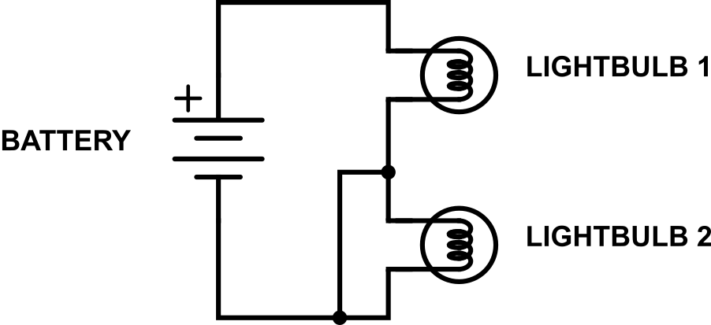
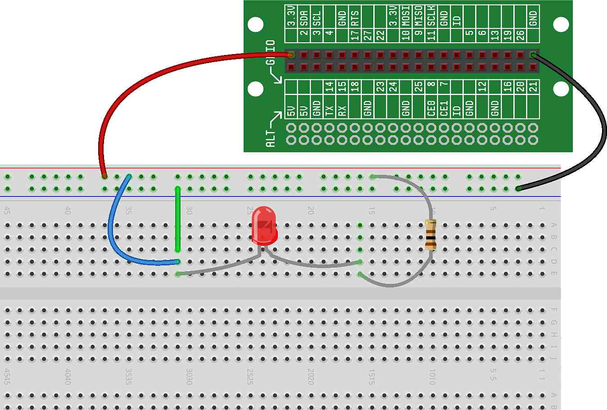
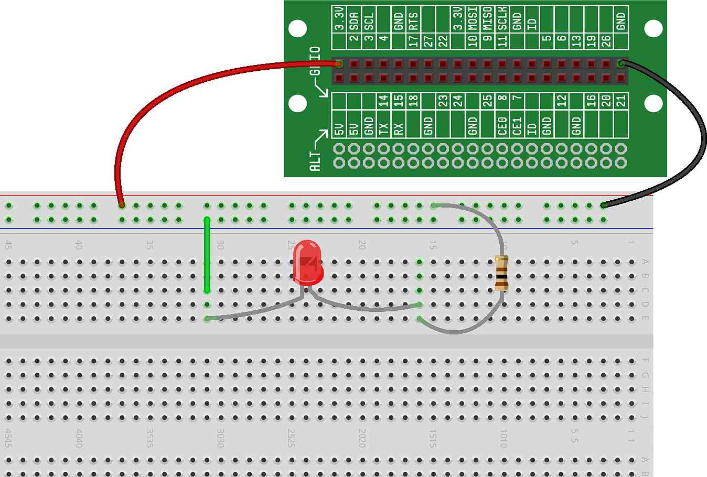
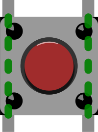

We have discussed several times throughout this guide that in order for a circuit to operate properly — for electric current to be able to flow — the circuit must be a closed loop. When we have a circuit that is a closed loop and where current is flowing, we call that a closed circuit. It is always our goal for our circuits to be closed circuits, so that they operate as we expect.
When our circuit doesn't form a closed loop, we call that an open circuit. Actually, by definition, an open circuit is not a circuit at all, as electric charge can't flow around a loop that is broken. Very often when a circuit is not working as expected — especially when nothing at all seems to be happening with the circuit — the problem is that the circuit doesn't form a complete loop and is an open circuit.
Let's take a look at the lightbulb circuit from , and cut a wire — by doing this, we have created an open circuit, current will stop flowing and the light bulb will not illuminate:
An important concept behind electric current is that it will tend to favor paths of low resistance over paths of higher resistance. In other words, if your circuit has two potential paths for current to flow, and if one of those paths has less resistance than the other, more current will flow through the path with less resistance than through the path with more resistance.
That's not to say all the current will flow through the path of least resistance, but that more current will flow through that path. In fact, if a circuit has 10 paths for current to flow, current will flow through all 10 of those paths, but the paths with the least resistance will have the most current flowing through them and the paths with the highest resistance will have the least current flowing through them.
While we always strive to have a closed circuit, not all closed circuits are going to work as we want or expect. One particular situation where a closed circuit will often not work correctly is when we have a short circuit.
A short circuit is a closed circuit where one part of a circuit is unintentionally connected by a plain wire to another part of the circuit, and unintentionally bypasses a set of components. Electric charge can then flow through a part of the circuit that it was not intended to and unexpected things can happen.
For example, let's say that we are trying to build a circuit that contains two lightbulbs:
But, we accidentally add another wire that runs between the two lightbulbs:
In this case, current has two potential paths that it can follow once it gets past the first lightbulb — one path is through the second lightbulb and one path is directly to the negative terminal of the battery. We mentioned above that current will always flow down every path, but when one path has a much lower resistance than another path, nearly all the current will tend to flow down the path with the much lower resistance.
A plain wire has almost no resistance. Therefore, almost all the current will flow through the bare wire — instead of through the second lightbulb — and the second lightbulb will not illuminate. Any time that you see your circuit not acting the way you would expect, check to ensure that there are no unintentional short circuits.
There's one specific type of short circuit that we want to talk about a little more, as it's especially bad. Not only can it make your circuit not work as expected, but it can even cause damage to various components of your circuit. This situation occurs when you have a short circuit (a plain wire) that connects power to ground with nothing in-between.
For example, this is one example of what shorting the battery might look like:
Here is another example of shorting the battery:
In that second example, we have a full circuit with a battery and lightbulb, and we also have a short that runs directly from the positive terminal of the battery to the negative terminal. Remember from earlier that if current has a choice between two paths, and one path has much lower resistance, most of the current will run through that path. In this case, most of the current will run from the positive terminal of the battery to the negative terminal, directly through the plain wire.
The reason why shorting a battery is so bad is that when you have all the current running directly from the positive terminal of the battery to the negative terminal without any load (components) in-between, you will quickly drain your battery.
But shorts don't apply just to batteries — you can accidentally short any power source. For example, here is what a short circuit might look like using our breadboard with the Raspberry Pi as the power source:
In this circuit, we have a short directly from power to ground. Because we have a lot of current running from the Raspberry Pi power source directly back to the Raspberry Pi ground, we'll overload the Raspberry Pi electronic circuitry and the Raspberry Pi will likely shutdown.
NOTE: If the Raspberry Pi ever shuts down or reboots while you are creating circuits, check to see if you have a short circuit on your breadboard. This will often happen if you accidentally wire both power and ground into the same breadboard rail, like this:
Look closely at the power and ground connections in the above circuit — it's NOT a working circuit!
One of the most common — and versatile — components in the electronics world is the pushbutton (or just "button"). A button is just a very simple switch — electric current can flow through it only when it is pressed, but can't flow through it when it is not pressed.
Go ahead and take one of the buttons out of your Your First Circuit Ready Set STEM Cell bag, and let's take a closer look at how it works. This is a very basic pushbutton — it has four "legs" that can be attached to your breadboard and wired to the circuit, and it has one button in the center of the device that can be pushed ("closed") or released ("open").
When the button is left unpressed, the legs are not connected to one another. If that button is inserted into a circuit, the circuit is open when the button is unpressed. As we learned above, in an open circuit, current doesn't flow and the components don't do anything. When the button is pressed, a small metal disk inside of the button pushes into the legs of the button, connecting all four metal legs together — this closes the circuit (when the button is part of a circuit). Remember, when a circuit is closed, current will flow and the components in the circuit will operate.
One thing to note: internally, the left side of the button (the two legs on the left) are connected together, and the right side of the button (the two legs on the right) are connected together:
The dashed green lines above show the internal wires that permanently connect some of the legs together. So, when using a button, you'll generally want to just use two of the legs — either the top two, or the bottom two.
As we mentioned above, when we insert a button into a circuit, it has one of two operations:
When the button is left unpressed, it creates an open circuit, no electric current can flow through the button and nothing happens.
When the button is pressed, the button acts as a wire and closes the circuit — electric current can then flow through the button and the rest of the circuit.